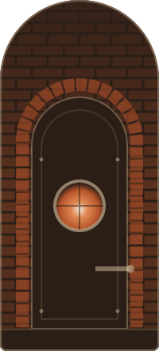
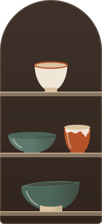

Тверь, Затьмачье · кофейня и мастерская
Кофе в чашке, которую вчера лепили
Утром за стойкой гончар. Чашки — из печи за стеной, и двух одинаковых у нас нет.
За стеной — мастерская
Кофейня занимает первый этаж старой керамической мастерской. Днём здесь пахнет кофе, вечером — сырой глиной и тёплой печью.
Чашки мы лепим сами. Одна вышла чуть кривее, у другой глазурь стекла не туда — так и задумано. Выбирайте ту, что ляжет в руку.
- 1 печь
- за стеной, топим по четвергам
- 3 мастера
- и у каждого своё клеймо
- 0
- одинаковых чашек на полке

IКруг крутится с 7 утра 
IIГлазурь перед обжигом 
IIIПолка с готовыми чашками
Займите место у печи
Оставьте имя и телефон — мы перезвоним и подтвердим. Столик у печи держим 15 минут.
Место за вами
Это пример сайта — заявка никуда не отправлена, перезванивать никто не будет.
Как дойти
Затьмачье, Смоленский переулок, 9. От Старого моста — минут десять пешком. Ищите дверь с глиняной табличкой.
Маршрут:Яндекс Карты (откроется в новой вкладке)Google Maps (откроется в новой вкладке)
Что сейчас на круге
Показываем новые чашки до обжига, зовём на мастер-классы и пишем, когда в печи пусто.